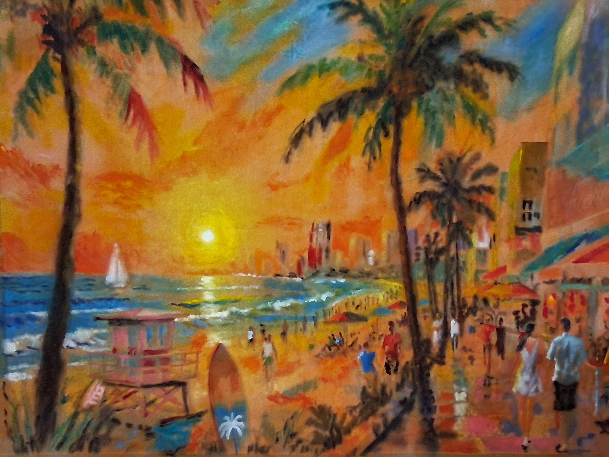
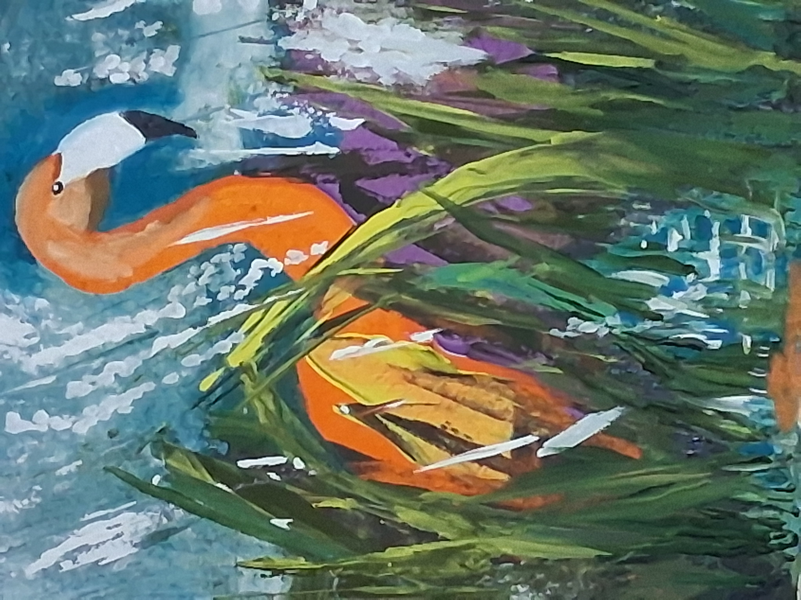
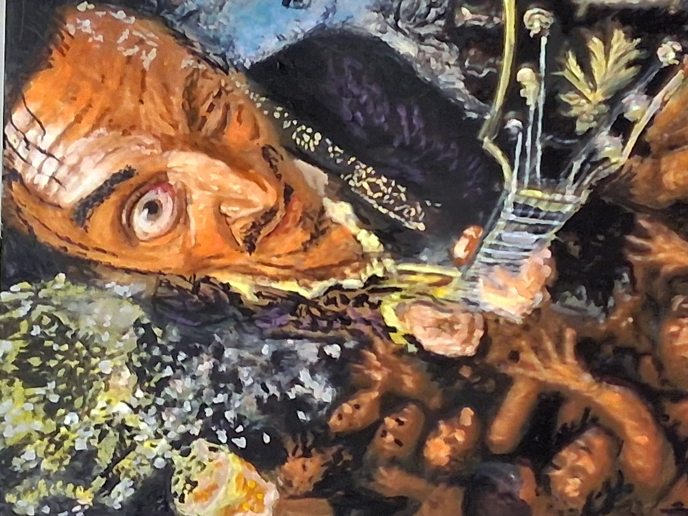
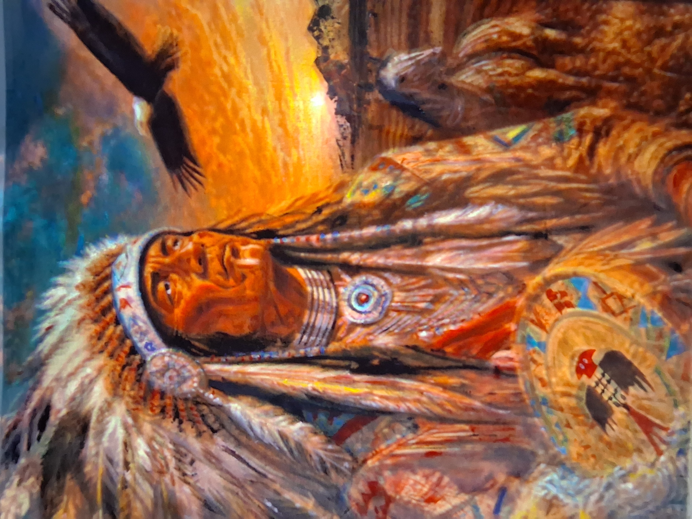
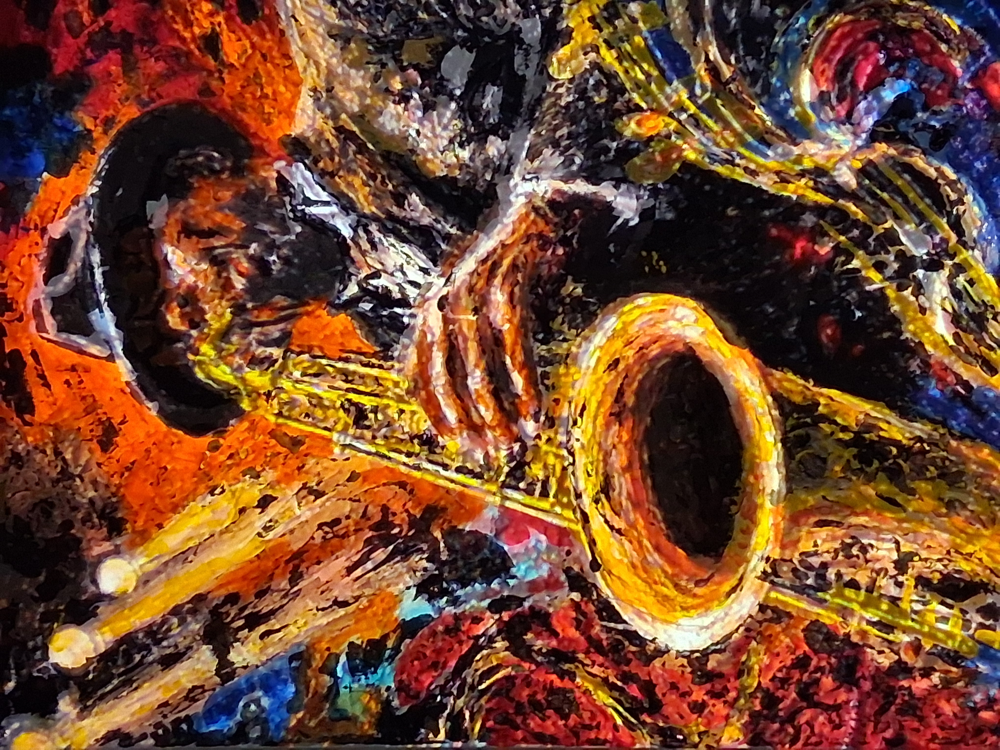

Creation
Create a new series of original Florida-inspired paintings and mixed-media wall works.
A Mixed-Media Art Project by Luis Tapia
A proposed mixed-media art project exploring South Florida culture, color, coastal life, street atmosphere, architecture, music, and everyday visual identity through the perspective of a Caribbean artist living in Lake Worth Beach, Florida.
Project type
Painting & Mixed-Media Wall Works
Designed for public exhibition or community-accessible presentation in Palm Beach County.
Project Overview
Florida Through a Caribbean Lens will create a new cohesive series of original paintings and mixed-media wall works inspired by South Florida’s tropical environment, coastal life, music, local businesses, architecture, and street culture.
The project combines painting, design, texture, and handcrafted visual elements to create work that feels accessible, colorful, and connected to community spaces. The goal is to develop a body of work for public exhibition or community-accessible presentation during the 2027–2028 grant period.
Create a new series of original Florida-inspired paintings and mixed-media wall works.
Present the work in a public or community-accessible venue in Palm Beach County.
Document the artwork, process, and exhibition for portfolio, community, and grant reporting use.
About the Artist
Luis Tapia is a visual artist based in Lake Worth Beach, Florida. His creative foundation began at a young age in Santo Domingo, Dominican Republic, where he studied drawing, painting, and music. His current practice includes painting, mixed-media concepts, stencil-based design, handmade visual work, and digitally planned compositions.
Luis’s work is driven by the challenge of realism and visual illusion. He is especially interested in how light, shadow, gradients, color blending, perspective, and atmosphere can make a flat surface feel dimensional and alive. His paintings often explore how far paint can go in creating depth, precision, brightness, and a sense of photographic realism through the hand of the artist.
His work is influenced by tropical color, music culture, coastal life, cars, restaurants, handmade signs, and everyday scenes from South Florida. Luis approaches artwork with both an artist’s eye and a builder’s mindset, considering composition, surface, material, presentation, and how each work interacts with the space where it is displayed.
In his mixed-media direction, Luis is also interested in extending realism beyond the canvas. Texture, sculptural surfaces, and physical 3D elements become part of the same question that drives his painting: how can real-world form, light, shadow, and material presence become part of the painted illusion?
Selected Recent Work
These titles represent recent work and visual directions that inform the proposed project. Image files can be added as the portfolio is finalized.

Mixed-media / painting on canvas, 45 × 37 in, 2026

Mixed-media painting of a flamingo bird, 11 × 14 in, 2026

Painting on canvas, 16 × 20 in, 2026

Painting on canvas, 40 × 45 in, 2026

Painting on canvas, 18 × 24 in, 2026

Painting on loose canvas, approx. 45 × 37 in, 2026
Grant Project Goal
Contact
Visual Artist / Mixed-Media Artist
Lake Worth Beach, Florida
Email and portfolio links can be added here before final publication.